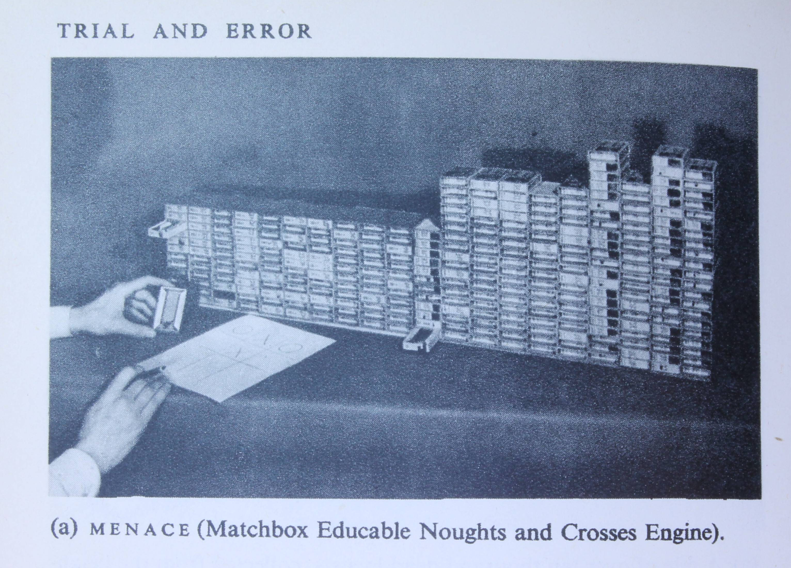

Reinforcement Learning from the ground up¶
This book implements Donald Michie’s MENACE in software using Dyalog APL.
The implementation builds an APL DSL (Domain-specific language) for Noughts and Crosses (Tic-tac-toe).
I plan to add a Python implementation later so that the two can be compared.
APL is a programming language developed by Kenneth E. Iverson. It is unmatched for expressing complex operations on arrays.
This short book is a work in progress. It is currently about 80% complete.
I hope that the book has enough explanation and code examples for you to be able to follow the flow. It introduces language elements as they are needed. It isn’t a systematic introduction to the language, but you will learn a lot of useful APL constructs from it.
If you would like to learn APL or want to experiment with the code in the notebooks, you can find out do that in Appendix A.
Fun with the MENACE¶
Once upon a time¶
Sometimes smart people jump to dumb conclusions.
Back in 1965 I attended my first programming course at the University of London Institute of Computer Science.
Our trainer was great. He was an academic lecturer with a wealth of programming experience, and we all learned a lot. But he wasn’t right about everything he told us.
On the last day he ran an Ask Me Anything session.
One of the students asked him if a computer program could ever beat consistently humans at chess. He answered immediately with a firm No.
He explained: “The program could only play by the programmer’s rules, so it could never be a better player than the programmer.”
He had no conception of a program that could learn from its mistakes and improve its strategy.
He can’t have known that several researchers had already published details of programs that did exactly that. They implemented Reinforcement Learning strategies.
Samuel’s checker player¶
In 1959 Samuel wrote about a program that played Draughts (known as Checkers in the USA).
The program learned to improve its game. Draughts or Checkers is not as complex as chess, but it is not a trivial game. Samuel’s implementation played the game surprisingly well. This was a significant milestone in the development of AI.
Another early program played a simpler game.
Donald Michie’s MENACE¶
Most of us have played Tic-tac-toe, or Noughts and Crosses as it’s known in the UK.
Donald Michie (a pioneer in AI) realised that Noughts and Crosses is a good candidate if you’re looking a way to start exploring game-playing AI.
In 1960 Michie created MENACE, the Matchbox Educable Noughts And Crosses Engine.
MENACE was a mechancial computer based on matchboxes filled with coloured beads. MENACE’s moves were determined by picking a bead at random from the appropriate matchbox. When the game was over the beads were adjusted depending on the outcome of the game.
This simple design was enough for it to become a decent player when it had played enough games against a human opponent.
MENACE was also implemented in software on a Pegasus computer.
I first read about MENACE in the Penguin Science Survey 1962 vol 2. You can see a picture of the original matchbox MENACE below.

RL (Reinforcement Learning) has been actively studied by researchers since the early implementations.
Recent progress in RL¶
Recent RL successes include Deep Mind’s AlphaGo and AlphaZero.
We’ve also seen the publication of a long-awaited second edition of Sutton and Barto’s seminal book on RL.
My long-time friend and mentor, Tom Westerdale, has formalised the relationship between temporal difference methods and Evolutionary Adaptive Systems.
There’s a lot of interest in RL at present and Michie’s MENACE is a great way to get familiar with the basics.
Michie’s MENACE revisited¶
Several people have replicated MENACE over the years.
Matthew Scroggs built a mechanical replica which was used by Hannah Fry and Matt Parker in the 2019 Royal Society Christmas Lecture to demonstrate how machine learning works. Scroggs also wrote a JavaScript implementation.
Scroggs intoduced MENACE to Oliver Child, and Child, while still at school, created his own replica.
I, too, am keen to replicate MENACE.
This book is based on a series of Jupyter Notebooks that will build up a simple implementation of MENACE in Dyalog APL.
APL (which stands for A Programming Language) is very well suited to the task.
APL was designed as a language for exposition, and it implements the algorithms that we’ll need simply and concisely.
O-X-O¶
I’m going to be talking about the game a good deal. Both the UK and US names are a bit tedious to type. In the notebooks that follow I will refer to the game as O-X-O.
The notebooks will explore the game and its implementation.